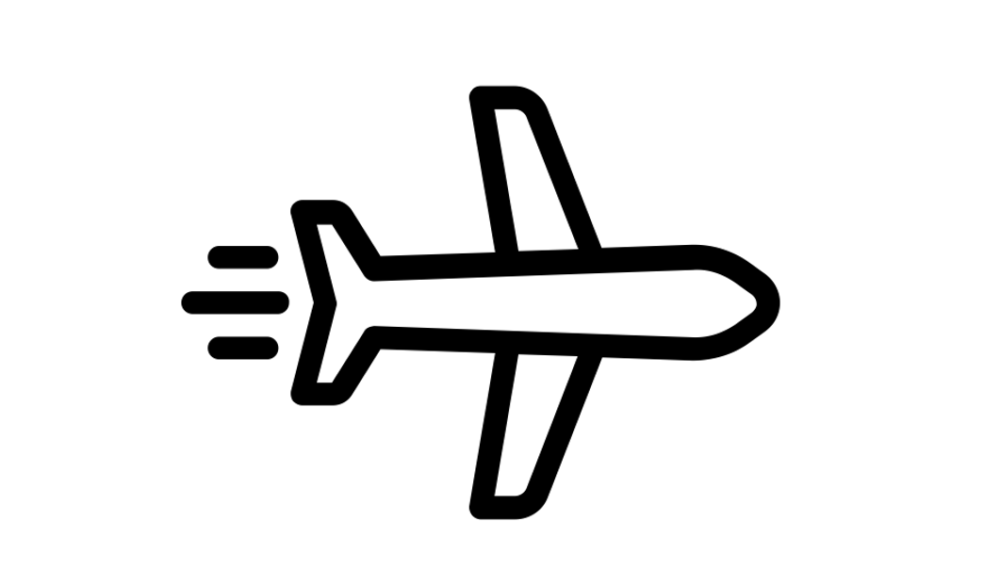
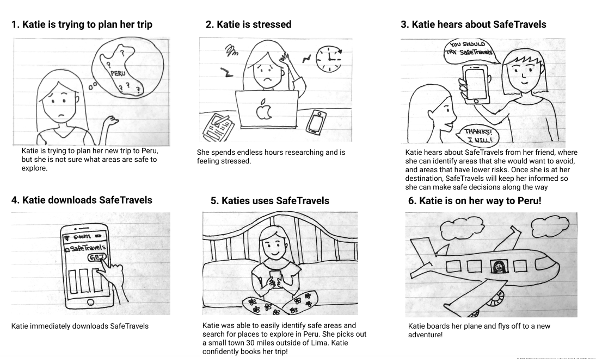
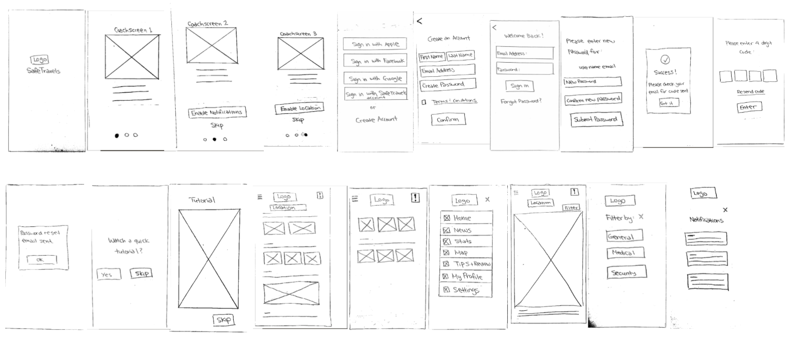
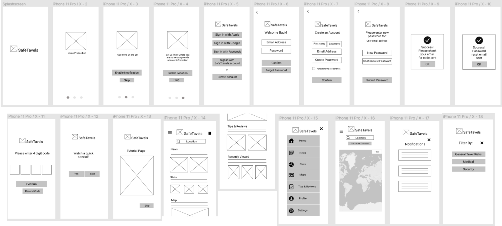
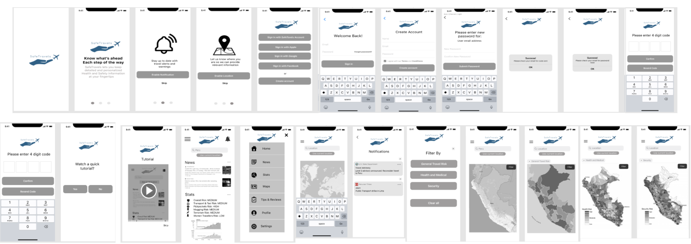

A Potluck Hosting App Case Study
I created this project as part of the UC Berkeley UX/UI Bootcamp. The project scope is to build a modern-day mobile app that helps people plan their next trip, post-Pandemic.
Originally, we had an idea for an app that was a forum to help people share food with their surrounding communities, but after doing interviews, our users told us what kind of app they actually wanted to see. Most of our users remarked that they like to host events for their loved ones regularly, but they don’t because they find it stressful to plan for, and cook for large groups.
Katie is a young professional who likes to explore new places, however she needs to feel safe while traveling. She would like to plan her next trip to Peru, but attempts to research have been frustrating; even when she is able to find information online, she’s not sure if it’s reliable, up-to-date, or even relevant to the specific areas she will be traveling through. Katie is left overwhelmed, anxious, and reluctant to book her trip because she does not want to go anywhere unfamiliar without accounting for all risks.
I observed that travelers are hesitant to visit unfamiliar destinations because they are concerned for their health and safety. Existing apps do not always account for safety measures and health risks. Therefore, I believe that providing an easy way to access health and safety information while planning a trip would help users have a more stress-free experience, and confidently travel to places that they previously would not.
How might we support travelers to confidently book their next trip so that they feel better informed about the risks?I used a feature priority matrix to identify features that would have the greatest impact for users, yet the least amount of strain for developers. From this, I determined the optimal features would include:
1) Alerting the user of up-to-date and relavant information 2) Displaying an interactive map which can be filtered to focus on specific area of concerns.I then sketched out a rough storyboard for my user persona.
My userflow included the onboarding process to introduce users to the app, and focused on the 2 main features provided by the app.
From here, I started sketcing out my wireframes, then digitalized them so I could start testing my low-fi prototype.   I conducted guerilla tests to understand whether users can successfully go through onboarding, and to understand how users navigate through the app.
My main feedback included:
1) Some participants had trouble finding the Menu icon on the top right of the screen. Most participants clicked on the header "Maps" on the home page to get to the Maps page, instead of clicking on the Menu icon
2) Participants liked the filtering feature on the Maps page. Users clicked the "x" to clear filter instead of clicking on the filter button.
From here, I completed an user test analysis to determine what features were of high priority to SafeTravels, and it's users. I found that most users had difficulty finding the menu button, and did not notice or utilize the notification button. I addressed these concerns by making the menu button more visible, and I changed the design of the notification button to make its function more apparent.